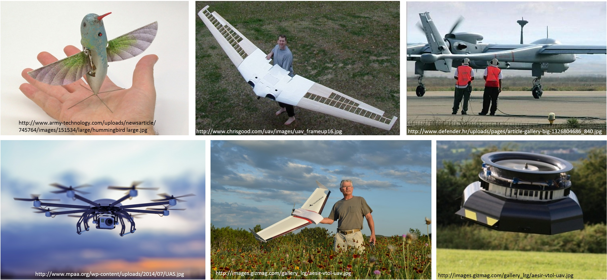
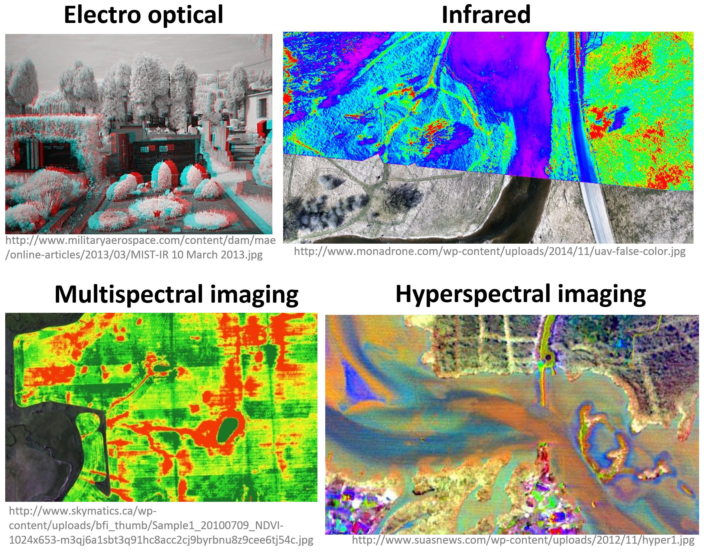
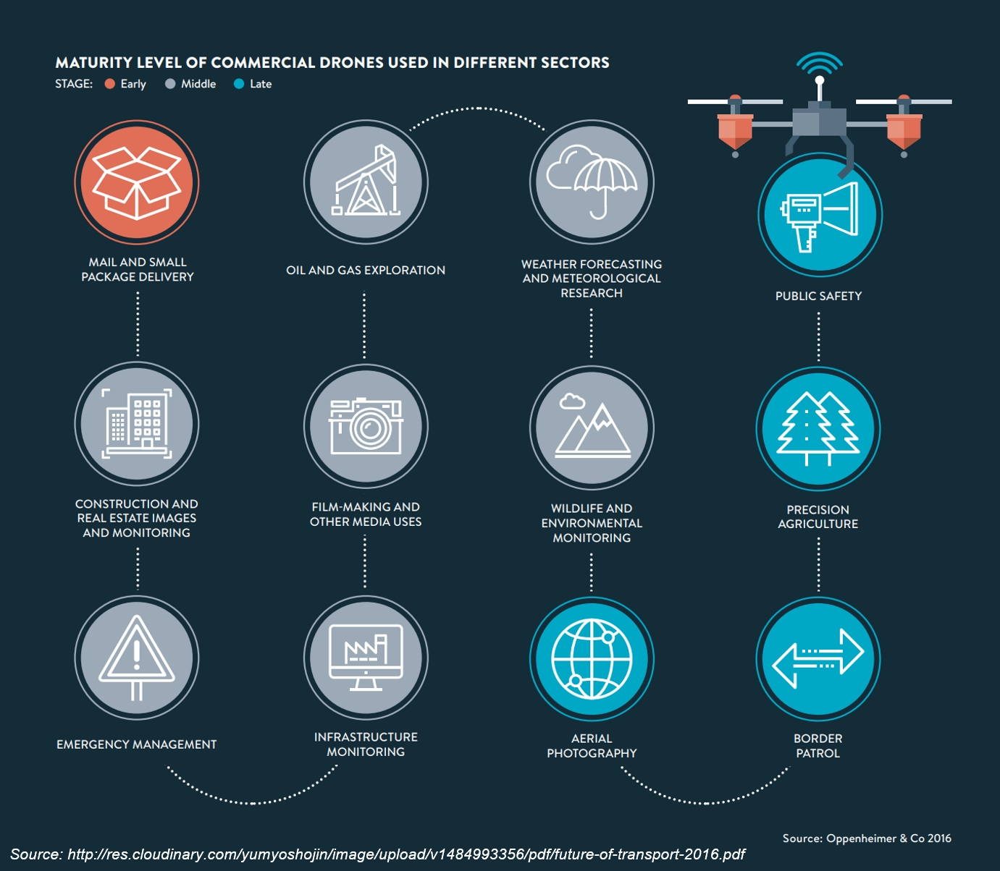
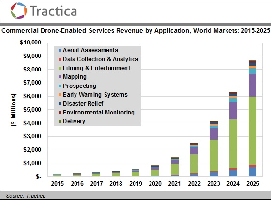
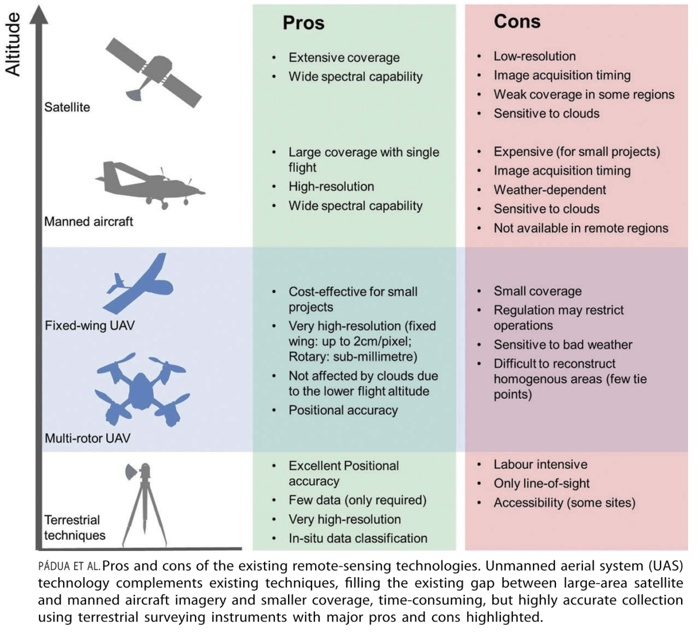

Introduction to UAS
GIS/MEA 584:
Mapping and Analysis Using UAS
Justyna Jeziorska
Center for Geospatial Analytics
North Carolina State University
Objectives
- Use the proper terminology and understand its meaning
- Describe the elements of UAS
- Classify different UAS according to their make and characteristics
- Describe different classes of the UAS
- Understand the current state of the UAS development
- Describe the objectives beyond the use of the UAS
What is an UAV?
For the brief summary read the overview articleUAS or UAV? Or maybe a drone?
UAV = Unmanned Aerial Vehicle
UAS = Unmanned Aerial Systems
Drone = Dynamic Remotely Operated Navigation Equipment
RPA = Remotely Piloted Aircraft
UAS: Unmanned Aircraft System
- Unmanned = without a person onboard
(operated by automatic or remote control)
- Aircraft = able to fly
- System = associated elements
related to safe operations (may include control stations, control links, support equipment, payloads, flight termination systems, and launch recovery equipment)
- consists of three elements:
- Unmanned Aircraft;
- Control Station;
- Data Link.
UAS or UAV? Or maybe a drone?
UAV = Unmanned Aerial Vehicle (?)
- Excludes: missiles, weapons, or exploding warheads,
- Includes: all classes of airplanes, helicopters, airships, and powered-lift aircraft,
- Doesn’t include: traditional balloons, rockets, tethered aircraft and un-powered gliders.

More about terminology in the article: Don’t Use the ‘D’ Word: They’re ‘UAVs’ or ‘RPAs’ But Definitely Not ‘Drones’
How does an UAS look like?
Types and classification of UAS
Different shapes and sizes…

… different designs…
… and different classifications
- By physical size
- By weight
- By endurance
- By altitude
- By wing loading
- By engine type
- By range
- By performance
- By capabilities
- By type...
Simplified classifications
- More (much much more) about classifications in the article
- Condensed basics including classification can be found in Unmanned Aircraft Systems for Civilian Missions
How does an UAS work?
System elements
Generic Unmanned Aircraft System
- Air vehicle
- Mission planning element
- Command and control element
- Communication link
- Launch and recovery element (for some of them)
- Payload
Sensors
Sensors (2)

sUAS sensors for mapping
- RGB cameras
- Infrared sensors
- Multispectral and hyperspectral sensors
- Laser scanners
- Thermal sensors
RGB (natural color) cameras
- Most common payload for consumer grade UAS
- Photo or video mode
- Mapping (orthophoto and DSM generation) possible even with non-photogrammetric cameras
- Variety of cameras, lenses and mounting systems - some suitable for 3D modeling

Multispectral and hyperspectral cameras
- Miniaturization is challenging in terms of optics and sensor calibration
- Weight, cost, data quality has improved; spectral bands, resolution need improvements
- Cameras with NIR band: agriculture and vegetation mapping (for NDVI)
- The more bands the more information, but also higher price of the sensor (multispectral - couple thousands, hyperspectral - tens of thousands $)
Active sensors - LiDAR and SAR
- Active sensors can reach bellow-canopy ground surface
- Large trade-offs between performance and size or cost of LiDAR
- LiDAR now common on UAS thanks to miniaturization
- SAR (Synthetic Aperture Radar) used experimentally, still faces challenges in adaptation to UAS


Thermal imaging
- Used in forest fire monitoring, search and resque missions
- For mapping purposes coupled with visible band sensors (see example FLIR DUO)
Sensor and platform integration
The optimal combination of carrier (Unmanned Vehicle) and sensing payload needs to be determined based on:- Volume, size and weight specifications
- Specific application requirements
- Mounting: integrated by manufacturer or custom solutions
- The sensors must be adapted to the carrier and vice versa
Who uses UAS?
Types of UAV operations
Types of UAS Operations
- Public Operations
Governmental, limited by federal statue to certain government operations within U.S. Airspace; - Civil Operations
Non-Governmental, must be conducted in accordance with all Federal Aviation Administration (FAA) regulations; - Model Aircraft
Hobby or Recreation only.
FAA – Federal Aviation Administation
- NAS – National Airspace System
The common network of U.S. airspace — air navigation facilities, equipment, and services; airports or landing areas; aeronautical charts, information and services; rules, regulations, and procedures; technical information; and manpower and material.
Integration of UAS into the NAS
- review of current policies, regulations, environmental impact, privacy considerations, standards, and procedures;
- identification of gaps in current UAS technologies and regulations, standards, policies, or procedures;
- development of new technologies and new or revised regulations, standards, policies, and procedures;
- and the associated development of guidance material, training, and certification of aircraft systems, propulsion systems, and airmen.
Can I use it?
regulations, standards, policies, and procedures
Know before you fly
- “Know Before You Fly” is an educational campaign that provides prospective unmanned aircraft users with the information and guidance they need to fly safely and responsibly.
- Different rules apply to recreational and business users and government entities
- New regulations (effective on August 29, 2016) known as “Part 107”)
What are UAS used for?
Army and government
Public Use Aircraft
- Department of Agriculture
- Department of Commerce
- Department of Defence
- Department of Energy
- Department of Homeland Security
- Department of Interior
- Department of Justice
- NASA
- NOAA
- State Universities
- State Law Enforcement
Civilian Application Fields
Application examples (1)

- Agriculture:
- UAS equipped with fertilizer and pesticide dispersing equipment can be used to spray over large fields;
- Telecommunications:
- As mobile relay platforms, e.g. in disaster zones for emergency telecommunications
Application examples (2)
- News broadcasting:
- In providing aerial video feeds for news events;
- Air traffic Control and ground traffic control:
- To monitor traffic and accidents over highways and streets, capture violation of traffic rules;
Application examples (3)

- Mineral exploration:
- In aerial survey, to find minerals in hard-to-reach regions;
- In existing mines, to map extracted material volumes;
- Coastal monitoring:
- Mapping dynamic shorelines and post storm assessment
UAS for Remote Sensing (1)
- Agriculture and environment:
- Crop monitoring, vegetation mapping, forest fire monitoring, animals detection;
- Intelligence, surveillance, and reconnaissance:
- Detection of lost persons in difficult-to-access situations, support fire brigades in real-time crisis management, rapid disaster management;
UAS for Remote Sensing (2)

- Aerial monitoring in engineering:
- Infrastructure inspections, distributed wind measurement, landslide monitoring;
- Cultural heritage:
- Orthophotos of archaeological sites, 3D models of man-made structures;
UAS for Remote Sensing (3)
- General surveying, mapping and photogrammetry, cadastral applications:
- cadastral surveying, alternative to traditional surveying, high-precision parcel boundary determination;
Use your imagination!
- Pizza delivery - Russian example, Domino’s DomiCopter
- Uber Eats
- Beer copter
Why shoud you know how to use UAS?
Why shoud you know how to use UAS?
Barriers
- constantly changing legislation and regulations,
- political and societal acceptance,
- ...
what do you consider a barrier in UAS development?
What obstacles do you see for yourself as a potential UAS user?